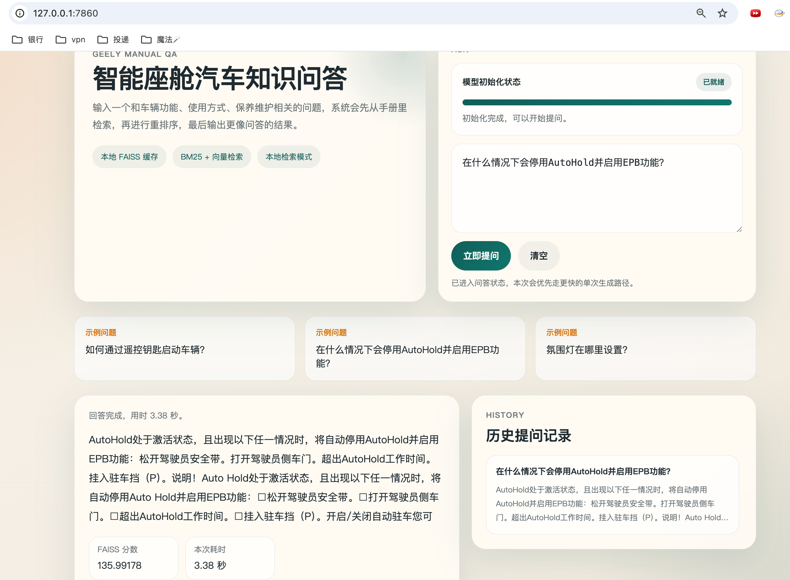
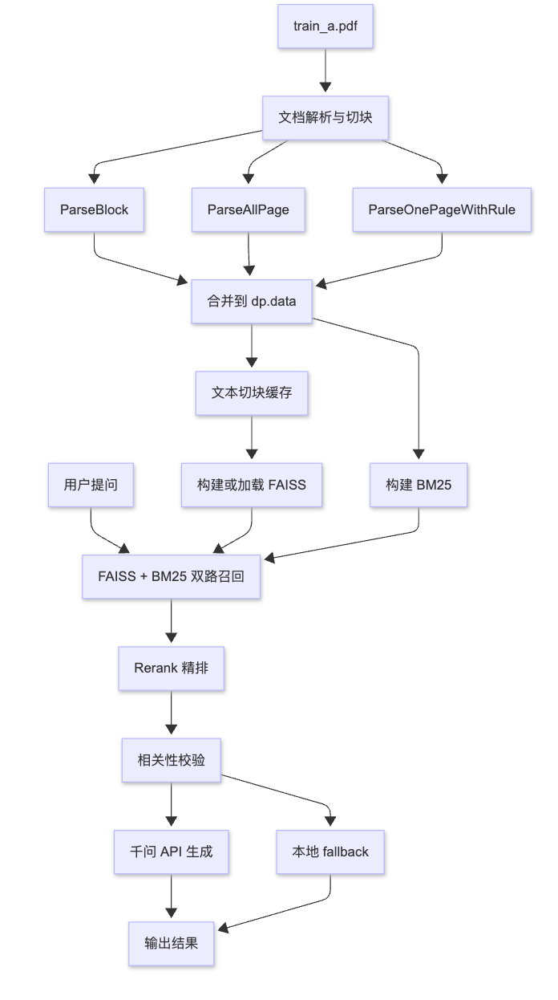

智能座舱语音对话工作流
面向汽车销售与智能客服场景，接入百度智能云千帆平台与 DeepSeek 大模型，参与 ASR + LLM + TTS 语音对话流程配置，优化 Prompt 模板、上下文拼接与 ASR 结果纠偏，提升咨询场景下的回答相关性与连贯性。
ASRLLMTTSPrompt意图纠偏
Experience
面向汽车销售与智能客服场景，接入百度智能云千帆平台与 DeepSeek 大模型，参与 ASR + LLM + TTS 语音对话流程配置，优化 Prompt 模板、上下文拼接与 ASR 结果纠偏，提升咨询场景下的回答相关性与连贯性。
围绕三星手机相册原生编辑场景，设计 Prompt 结构约束、DINO 背景相似度筛选与多轮重试策略，引入泊松融合后处理，将内部测试编辑准确率由 65% 提升至 85%，并参与模型选型和指标评估。
面向脑控抓取任务，探索脑电解码模型、高密度刺激与遮挡物体对感知的影响，积累信号处理和模型结构设计经验。
设计多尺度频域特征提取算法，通过注意力机制进行时空特征融合，将识别准确率从 96% 提升至 99.7%；基于九天智能体平台搭建“意图识别-医疗问答-情感陪护-信息推送”的多节点工作流。
Projects
基于汽车用户手册构建的 RAG 问答系统，支持汽车功能、配置及操作说明查询，提升用户检索效率与回答准确性。


Self Review
熟练掌握 C++、Python，具备较强抗压能力和技术热情；擅长使用大模型完成代码应用工作，能够把算法、工具调用和业务流程结合成可落地的 AI 应用。